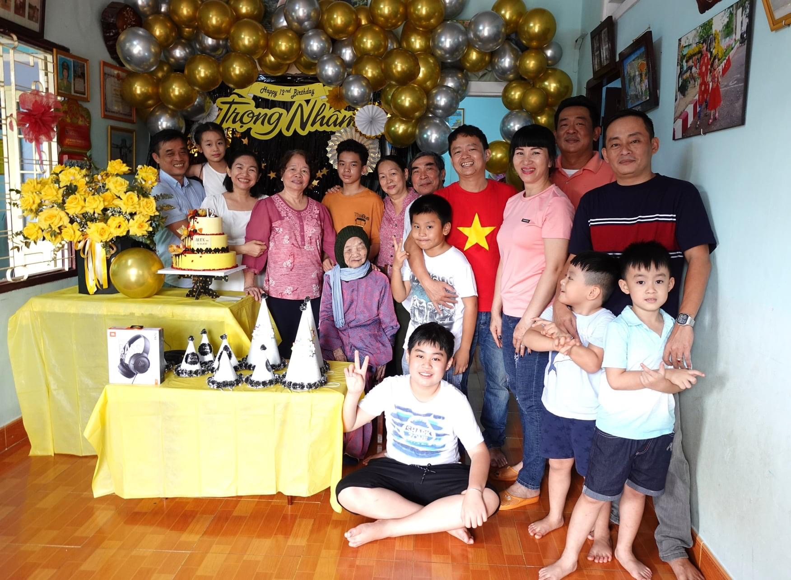

Giới Thiệu
Nhân tên đầy đủ là Võ Trọng Nhân, sinh ngày 12/12/2008 (Ngày sinh đẹp ha hihi), hiện đang là học sinh lớp 8B1 trường Liên kết Quốc tế INschool có địa chỉ tại thành phố Long Khánh, tỉnh Đồng Nai. Cao 1m65 và nặng 58kg, tính tình lương thiện, hiền lành, thích sự sạch sẽ và vô cùng gọn gàng.

Gia Đình
Nhân sinh ra và lớn lên trong một gia đình tứ đại đồng đường và Nhân là đời thứ 4, ba Nhân làm kinh doanh, mẹ mà là cựu nhà giáo. Vì là cháu trai đầu lòng nên Nhân được ông bà yêu thương rất nhiều. Hiện tại Nhân sống với mẹ cùng bà cố, ông bà ngoại và em gái vì ba Nhân thường đi làm xa ít khi ở nhà. Nhân rất hạnh phúc vì được bảo bọc và yêu thương trong một gia đình đầm ấm.
Mục Tiêu
Mục tiêu trong tương lai mà Nhân muốn đạt tới đó là trở thành một lập trình viên và đi được đi du học. Để đạt được mục tiêu đó, ngày ngày Nhân đã nỗ lực học tập thật tốt, lên kế hoạch để cân bằng việc học ở trường và lớp học lập trình online.
Sai Lầm Tuổi Trẻ
Năm lớp 7 Nhân đã từng nghiện game, phí thời gian, sức khỏe và vuột mất rất nhiều cơ hội chỉ vì những trận chiến ảo, hơn hết Nhân đã làm cho mẹ của mình lo lắng, thất vọng và đau long rất nhiều. Đó cũng là bài học mà nhân nhất định ghi nhớ để không bao giờ tái phạm.